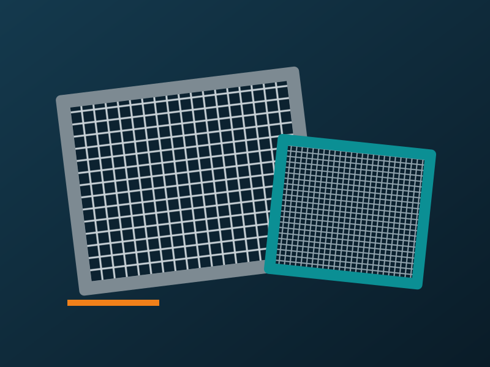

01 / 05
Plansifter Metal Mesh
Screening mesh for plansifters, supplied in a range of specifications and sizes.
- SEFAR NYTAL metal meshMetal screening mesh in the NYTAL range.Request quote
- Stainless steel meshCorrosion-resistant mesh for food-grade milling.Request quote
- Heavy-duty screening meshHard-wearing mesh for demanding screening duties.Request quote
- Mesh in different specifications and sizesTell us your plansifter and sieve size and we will quote.Request quote